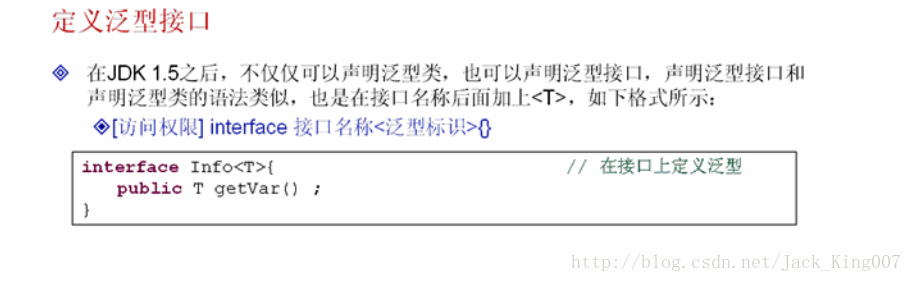
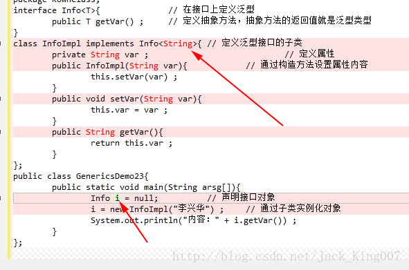
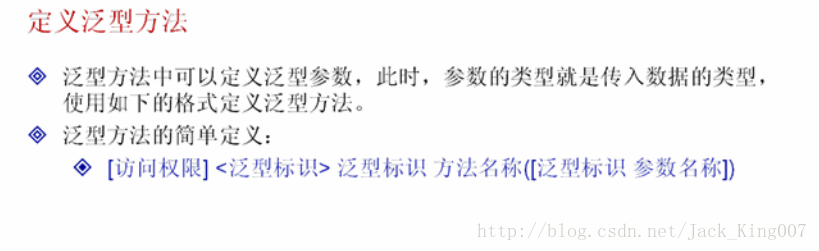

java15高新知识之泛型（3）
（1）泛型接口的使用
之前的所有操作都是在类中直接使用泛型操作的 那么java来说也可以直接在接口中定义及使用泛型

泛型在接口中实现的两种形式
定义子类：在子类的定义上声明泛型类型
package KownClass;
interface Info<T>{ // 在接口上定义泛型
public T getVar() ; // 定义抽象方法，抽象方法的返回值就是泛型类型
}
class InfoImpl<T> implements Info<T>{ // 定义泛型接口的子类
private T var ; // 定义属性
public InfoImpl(T var){ // 通过构造方法设置属性内容
this.setVar(var) ;
}
public void setVar(T var){
this.var = var ;
}
public T getVar(){
return this.var ;
}
};
public class GenericsDemo23{
public static void main(String arsg[]){
Info<String> i = null; // 声明接口对象
i = new InfoImpl<String>("李兴华") ; // 通过子类实例化对象
System.out.println("内容：" + i.getVar()) ;
}
};如果现在实现接口的子类不想使用泛型声明 则在实现接口的时候直接指定具体的操作类型 这一种更加常用

（3）泛型方法

class Demo{//[访问权限]<泛型标志>泛型标志 方法名称
<span style="white-space:pre"> </span>public <T> T fun(T t){ // 可以接收任意类型的数据
<span style="white-space:pre"> </span>return t ; // 直接把参数返回
}
};
public class GenericsDemo26{
public static void main(String args[]){
Demo d = new Demo() ; // 实例化Demo对象
String str = d.fun("李兴华") ; // 传递字符串
int i = d.fun(30) ; // 传递数字，自动装箱
System.out.println(str) ; // 输出内容
System.out.println(i) ; // 输出内容
}
};(4)泛型数组
使用泛型的时候 也可以传递一个泛型数组
package KownClass;
public class GenericsDemo23{
public static void main(String args[]){
Integer i[] = fun1(1,2,3,4,5,6) ; // 返回泛型数组
fun2(i) ;
}
public static <T> T[] fun1(T...arg){ // 接收可变参数
return arg ; // 返回泛型数组
}
public static <T> void fun2(T param[]){ // 输出
System.out.print("接收泛型数组：") ;
//param里装着数组 用foreach一个一个输出按着泛型
for(T t:param){
System.out.print(t + "、") ;
}
}
};（5）泛型的嵌套设置
package KownClass;
class Info<T,V>{ // 接收两个泛型类型
private T var ;
private V value ;
public Info(T var,V value){
this.setVar(var) ;
this.setValue(value) ;
}
public void setVar(T var){
this.var = var ;
}
public void setValue(V value){
this.value = value ;
}
public T getVar(){
return this.var ;
}
public V getValue(){
return this.value ;
}
};
class Demo<S>{
private S info ;
public Demo(S info){
this.setInfo(info) ;
}
public void setInfo(S info){
this.info = info ;
}
public S getInfo(){
return this.info ;
}
};
public class GenericsDemo23{
public static void main(String args[]){
Demo<Info<String,Integer>> d = null ; // 将Info作为Demo的泛型类型
Info<String,Integer> i = null ; // Info指定两个泛型类型
i = new Info<String,Integer>("李兴华",30) ; // 实例化Info对象
d = new Demo<Info<String,Integer>>(i) ; // 在Demo类中设置Info类的对象
System.out.println("内容一：" + d.getInfo().getVar()) ;
System.out.println("内容二：" + d.getInfo().getValue()) ;
}
};